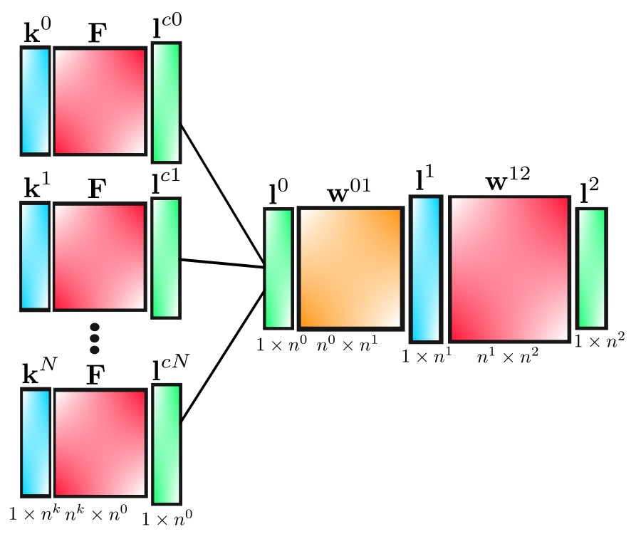
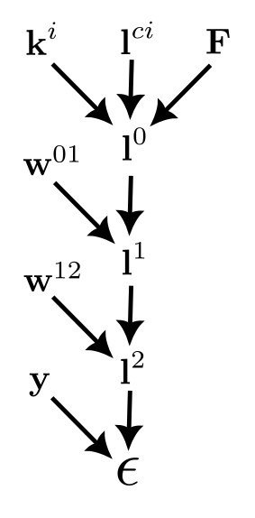

In this post, we'll derive the back-propagation equations for our convolutional net, which has the structure shown below.

| matrix |
size |
meaning |
| \(\textbf{k}^i\) |
\(1\times n^k\) |
i\(^{th}\) kernel |
| \(\textbf{F}\) |
\(n^k \times n^0\) |
image frame captures |
| \(\textbf{l}^{ci}\) |
\(1\times n^0\) |
i\(^{th}\) pre-pooled layer |
| \(\textbf{l}^0\) |
\(1\times n^0\) |
pooled convolution layer |
| $\textbf{w}^{01} |
\(n^0 \times n^1\) |
weights from layer 0 to 1 |
| \(\textbf{l}^1\) |
\(1\times n^1\) |
hidden layer |
| $\textbf{w}^{12} |
\(n^1 \times n^2\) |
weights from layer 1 to 2 |
| \(\textbf{l}^2\) |
\(1\times n^2\) |
output layer |
In terms of components, the convolutional layer is given by
$$
l_i^{cj}=\sum_m k_m^j F_{mi},
$$
and
$$
l_k^0 = \tanh \left[ \max \left(l_k^{c0},l_k^{c1},...,l_k^{cN}\right) \right].
$$
For layers 1 and 2 we have
$$
l_q^1=\tanh \left[\sum_r l_r^0 w_{rq}^{01}\right].
$$
and
$$
l_n^2 = \sigma \left[\sum_l l_l^1 w_{ln}^{12} \right],
$$
where \(\sigma\) is the softmax function. The loss function is
$$
\epsilon = \frac{1}{2}\sum_p \left(l_p^2-y_p \right)^2,
$$
and by applying the chain rule to these equations we will derive the back-propagation equations.

Similarly to the 3 layer non-convolutional net, we have
$$
\frac{\partial \epsilon}{\partial w_{qs}^{12}}=\left[\textbf{l}^1\otimes\left(\textbf{l}^2-\textbf{y}\right)\textbf{D}_{s'}\right]_{qs}
$$
and
$$
\frac{\partial \epsilon}{\partial w_{qs}^{01}}=\left[\textbf{l}^0 \otimes \left(\textbf{l}^2-\textbf{y}\right)\textbf{D}_{\sigma'}\textbf{w}^{12,T}\textbf{D}_{t'}^1\right]_{qs}.
$$
but now in addition to these we have
$$
\frac{\partial \epsilon}{\partial k_q^i}=\sum_{n,m,p}\frac{\partial \epsilon}{\partial l_m^2}\frac{\partial l_m^2}{\partial l_n^1}\frac{\partial l_n^1}{\partial l_p^0}\frac{\partial l_p^0}{\partial k_q^i}.
$$
These derivatives are
$$
\frac{\partial \epsilon}{\partial l_m^2}=\sum_p \left(l_p^2-y_p\right)\delta_{pm}=\left(l_m^2-y_m\right),
$$
$$
\frac{\partial \l_m^2}{\partial l_n^1}=\sigma_m'\sum_l w_{lm}^{12}\delta_{ln}=\sigma_m' w_{nm}^{12},
$$
$$
\frac{\partial l_n^1}{\partial l_p^0}=t_n'\sum_r \delta_{pr}w_{rn}^{01}=t_n'w_{pn}^{01},
$$
and
$$
\frac{\partial l_p^0}{\partial k_q^i}=\frac{\partial}{\partial k_q^i}\{t\left[\max(l_p^{c0},l_p^{c1},...,l_p^{cN})\right]\}=t_p^{0'}\frac{\partial l_p^{c,w(p)}}{\partial k_q^i},
$$
where \(w(p)\) is the index of the largest \(l_p^{ci}\) ("w" is for "winner"). This last derivative is given by
$$
\frac{\partial l_p^{c,w(p)}}{\partial k_q^i}=\frac{\partial}{\partial k_q^i}\left[\sum_m k_m^{w(p)}F_{mp}\right]=\sum_m F_{mp}\delta^{i,w(p)}\delta_{mq}=F_{qp}\delta^{i,w(p)}.
$$
Defining
$$
\mathcal{F}_{qp}^i\equiv F_{qp}\delta^{i,w(p)},
$$
this result can be written more compactly as
$$
\frac{\partial l_p^{c,w(p)}}{\partial k_q^i}=\mathcal{F}_{qp}^i,
$$
so that
$$
\frac{\partial l_p^0}{\partial k_q^i}=t_p^{0'}\mathcal{F}_{qp}^i.
$$
Hence, for the components of the gradient corresponding to the kernels, we obtain
$$
\frac{\partial \epsilon}{\partial k_{q}^i}=\sum_{n,m,p}\left(l_m^2-y_m\right)\sigma_m' w_{mn}^{12,T}t_n^{1'} w_{np}^{01,T}t_p^{0'}\mathcal{F}_{pq}^{i,T},
$$
which can be written as
$$
\frac{\partial \epsilon}{\partial k_{q}^i}=\left[\left(\textbf{l}^2-\textbf{y}\right)\textbf{D}_{\sigma'}\textbf{w}^{12,T}\textbf{D}_{t'}^1\textbf{w}^{01,T}\textbf{D}_{t'}^0 \mathcal{F}^{i,T} \right]_q.
$$
Discuss on Twitter